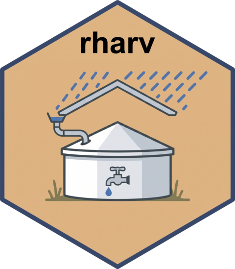

Size a parameter to reach a target guarantee level
Source:R/iso-curves.R
rh_size_for.RdGeneralises the zero-deficit sizing functions (rh_guaranteed_capacity() etc.)
to any guarantee level: it finds the value of one design parameter
("capacity", "area" or "demand") at which a chosen guarantee metric
reaches target_value. Because the metric is monotone in each parameter the
search is a bisection: for capacity/area it returns the smallest value that
reaches the target; for demand the largest value that still does.
Usage
rh_size_for(
precip,
base = list(),
vary,
target_value,
metric = "attendance_pct",
tol = 0.01,
max = NULL,
dates = NULL,
climatology = FALSE
)Arguments
- precip
Numeric vector of daily precipitation (mm). If
climatology = TRUE, it is first collapsed to its day-of-year mean (seedates).- base
Named list of the fixed
rh_simulate()arguments (everything exceptvary).- vary
Parameter to solve for:
"capacity","area"or"demand".- target_value
Target guarantee value (e.g.
95for 95 percent).- metric
Guarantee metric:
"attendance_pct"(default, volumetric) or"reliability_pct"(time-based).- tol
Search tolerance (in units of
vary).- max
Optional upper bound for the search; grown automatically if needed.
- dates
Optional date vector aligned with
precip, required only whenclimatology = TRUE.- climatology
If
TRUE, simulate on the day-of-year climatology (much faster) instead of the full series. DefaultFALSE.
Examples
# capacity needed for 90% volumetric attendance
rh_size_for(precip_pi$value,
base = list(demand = 6.6, area = 4170, runoff = 0.85, efficiency = 1),
vary = "capacity", target_value = 90,
dates = precip_pi$date, climatology = TRUE)
#> [1] 569.9067